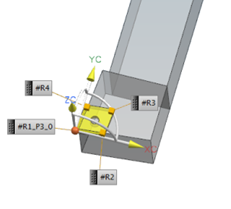
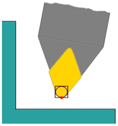
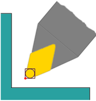
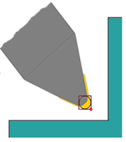

The new Automatic option determines the best suited tracking point based on the tool holder orientation. The tracking point P-cluster value propagates to the tool path and NC tool path output.

|
 Operation Holder Angle 80 Degrees |
 Operation Holder Angle 50 Degrees |
The Tracking Point option, Rotate with Holder gives you additional support when re-orienting the tool by flipping the tool around the holder or by changing the tool holder angle.
Using the Automatic option, NX chooses a tracking point depending on holder rotation. Additional tracking points are automatically created when necessary.
|
 Operation Holder Angle 135 Degrees, Flipped Tool |
You no longer have to manually select the tracking points.
|
Application |
Manufacturing |
|
Prerequisite |
Rough or Finish turn operation The Reorient Tool Holder check box must be selected in the Tool Orientation group. |
|
Location in dialog box |
[Rough or Finish operation] dialog box→Tool Orientation group→Tracking Point list→Automatic |